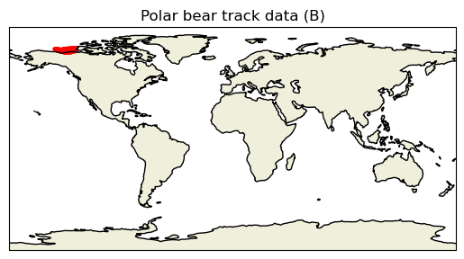
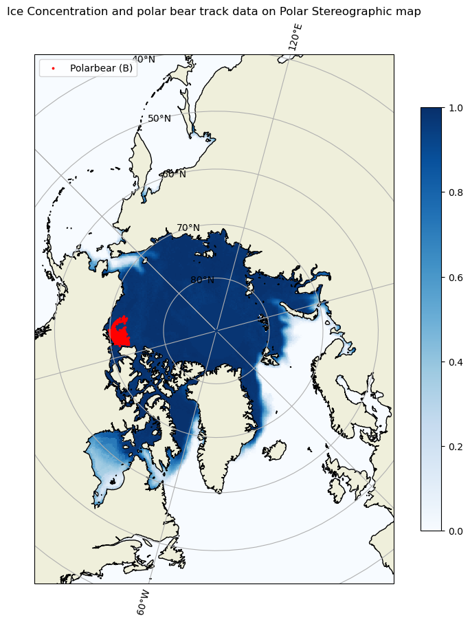

import netCDF4 as nc
import cartopy.crs as ccrs
import cartopy.feature as cfeature
import matplotlib.pyplot as plt
import warnings
warnings.filterwarnings("ignore")
Map Geographical and Polarstereographic data on a projected map
history | Updated September 2023
NOAA PolarWatch distributes gridded and tabular oceanographic data for polar regions. Satellite data include geospatial information and most of them are in geographical coordinates (latitude and longitude). PolarWatch satellite data are often projected using Polar Stereographic Projections in x and y coordinates.
Objective
This tutorial will demonstrate how to plot a polar stereographic projected data on a projected map, and to add another dataset with geographical coordinates (latitude and longitude) onto the map.
The tutorial demonstrates the following techniques
- Accessing satellite data from ERDDAP
- Making a projected map
- Adding polarstereographic data to the map
- Adding geographically referenced data (lat and lon) to the map
Datasets used
Sea Ice Concentration, NOAA/NSIDC Climate Data Record V4, Northern Hemisphere, 25km, Science Quality, 1978-Present, Monthly
This dataset includes sea ice concentration data from the northern hemisphere, and is produced by the NOAA/NSIDC using the Climate Data Record algorithm. The resolution is 25km, meaning each grid in this data set represents a value that covers a 25km by 25km area. The dataset is avaialble from the NOAA PolarWatch Catalog.
Polar bear tracking data
For the demonstrative purpose of adding a dataset in geographical coords (lat, lon) to the projected map, GPS data for a polar bear track were used. More information about the data can be found at https://borealisdata.ca/file.xhtml?fileId=151017&version=1.0
Import packages
# There are many ways to get data. We will create a function that points to
# NOAA PolarWatch ERDDAP Server gridded dataset page to get data with its unique ID
def point_to_dataset(dataset_id, base_url='https://polarwatch.noaa.gov/erddap/griddap'):
base_url = base_url.rstrip('/')
full_url = '/'.join([base_url, dataset_id])
return nc.Dataset(full_url)
# 'nsidcG02202v4nhmday' is the unique ID of our interested data
# from PolarWatch ERDDAP data server
da = point_to_dataset('nsidcG02202v4nhmday')Mapping projected data on a projected basemap
We first need to create a basemap with the Polar Stereographic projection. Most of the netCDF data files include metadata about mapping. This can be used to set a projection and mapping boundaries for the data.
# prints metadata embedded in netCDF file
print(da)<class 'netCDF4._netCDF4.Dataset'>
root group (NETCDF3_CLASSIC data model, file format DAP2):
_NCProperties: version=2,netcdf=4.8.1,hdf5=1.10.6
acknowledgement: This project was supported in part by a grant from the NOAA Climate Data Record Program. Production of original NASA Team and Bootstrap algorithm estimates supported by the NASA Polar Distributed Active Archive Center. The sea ice concentration algorithms were developed by Donald J. Cavalieri, Josefino C. Comiso, Claire L. Parkinson, and others at the NASA Goddard Space Flight Center in Greenbelt, MD.
cdm_data_type: Grid
cdr_variable: cdr_seaice_conc_monthly
comment: The variable melt_onset_day_cdr_seaice_conc_monthly is not available for this month.
contributor_name: Walter N. Meier, Florence Fetterer, Ann Windnagel, J. Scott Stewart, Trey Stafford, Matt Fisher
contributor_role: principal investigator, author, author, software developer, software developer, software developer
Conventions: CF-1.6, ACDD-1.3, COARDS
creator_email: nsidc@nsidc.org
creator_name: NSIDC
creator_type: institution
creator_url: https://nsidc.org/
date_created: 2023-02-22T23:18:04Z
defaultGraphQuery: cdr_seaice_conc_monthly[last]%5B(-5337500.0)%5D%5B(3737500.0)%5D&.draw=surface
grid_mapping_false_easting: 0.0
grid_mapping_false_northing: 0.0
grid_mapping_GeoTransform: -3850000.0 25000.0 0 5850000.0 0 -25000.0
grid_mapping_grid_boundary_bottom_projected_y: -5350000.0
grid_mapping_grid_boundary_left_projected_x: -3850000.0
grid_mapping_grid_boundary_right_projected_x: 3750000.0
grid_mapping_grid_boundary_top_projected_y: 5850000.0
grid_mapping_latitude_of_projection_origin: 90.0
grid_mapping_longitude_of_projection_origin: -45.0
grid_mapping_name: polar_stereographic
grid_mapping_parent_grid_cell_column_subset_end: 304.0
grid_mapping_parent_grid_cell_column_subset_start: 0.0
grid_mapping_parent_grid_cell_row_subset_end: 448.0
grid_mapping_parent_grid_cell_row_subset_start: 0.0
grid_mapping_proj4text: +proj=stere +lat_0=90 +lat_ts=70 +lon_0=-45 +k=1 +x_0=0 +y_0=0 +a=6378273 +b=6356889.449 +units=m +no_defs
grid_mapping_scaling_factor: 1.0
grid_mapping_semimajor_radius: 6378273.0
grid_mapping_semiminor_radius: 6356889.449
grid_mapping_spatial_ref: PROJCS["NSIDC Sea Ice Polar Stereographic North",GEOGCS["Unspecified datum based upon the Hughes 1980 ellipsoid",DATUM["Not_specified_based_on_Hughes_1980_ellipsoid",SPHEROID["Hughes 1980",6378273,298.279411123061,AUTHORITY["EPSG","7058"]],AUTHORITY["EPSG","6054"]],PRIMEM["Greenwich",0,AUTHORITY["EPSG","8901"]],UNIT["degree",0.01745329251994328,AUTHORITY["EPSG","9122"]],AUTHORITY["EPSG","4054"]],UNIT["metre",1,AUTHORITY["EPSG","9001"]],PROJECTION["Polar_Stereographic"],PARAMETER["latitude_of_origin",70],PARAMETER["central_meridian",-45],PARAMETER["scale_factor",1],PARAMETER["false_easting",0],PARAMETER["false_northing",0],AUTHORITY["EPSG","3411"],AXIS["X",UNKNOWN],AXIS["Y",UNKNOWN]]
grid_mapping_srid: urn:ogc:def:crs:EPSG::3411
grid_mapping_standard_parallel: 70.0
grid_mapping_straight_vertical_longitude_from_pole: 135.0
grid_mapping_units: meters
history: HISTORY_ATTRIBUTE
2023-08-04T18:45:39Z (local files)
2023-08-04T18:45:39Z https://polarwatch.noaa.gov/erddap/griddap/nsidcG02202v4nhmday.das
id: https://doi.org/10.7265/sr8p-kc62
infoUrl: https://nsidc.org/data/g02202/versions/4/
institution: NSIDC > National Snow and Ice Data Center
keywords: algorithm, america, arctic, area, atlantic, barents, bay, beaufort, bering, bootstrap, canada, cdr_seaice_conc_monthly, center, chukchi, climate, common, concentration, continent, CONTINENT > NORTH AMERICA > CANADA > HUDSON BAY, Continent > North America > Canada > Hudson Bay, cryosphere, data, davis, day, defense, deviation, distribution, dmsp, earth, Earth Science > Cryosphere > Sea Ice > Ice Extent, Earth Science > Cryosphere > Sea Ice > Sea Ice Concentration, Earth Science > Oceans > Sea Ice > Ice Extent, estimated, extent, flag, flags, flight, format, fraction, geographic, Geographic Region > Arctic, Geographic Region > Northern Hemisphere, Geographic Region > Polar, goddard, gsfc, gulf, hemisphere, hudson, ice, ice distribution, lawrence, mayen, melt, melt_onset_day_cdr_seaice_conc_monthly, meteorological, microwave, month, monthly, nasa, national, network, noaa, noaa/nsidc, north, northern, norwegian, nsidc, nsidc_bt_seaice_conc_monthly, nsidc_nt_seaice_conc_monthly, ocean, Ocean > Arctic Ocean, Ocean > Arctic Ocean > Barents Sea, Ocean > Arctic Ocean > Beaufort Sea, Ocean > Arctic Ocean > Chukchi Sea, Ocean > Atlantic Ocean > North Atlantic Ocean > Davis Straight, OCEAN > ATLANTIC OCEAN > NORTH ATLANTIC OCEAN > GULF OF ST LAWRENCE, Ocean > Atlantic Ocean > North Atlantic Ocean > North Sea, Ocean > Atlantic Ocean > North Atlantic Ocean > Norwegian Sea, OCEAN > ATLANTIC OCEAN > NORTH ATLANTIC OCEAN > SVALBARD AND JAN MAYEN, Ocean > Pacific Ocean, Ocean > Pacific Ocean > North Pacific Ocean > Bering Sea, Ocean > Pacific Ocean > North Pacific Ocean > Sea Of Okhotsk, oceans, okhotsk, onset, over, pacific, passive, polar, processed, program, qa_of_cdr_seaice_conc_monthly, quality, record, region, satellite, science, sea, sea_ice_area_fraction, sea_ice_area_fraction status_flag, snow, source, space, standard, statistics, status, stdev_of_cdr_seaice_conc_monthly, straight, svalbard, tdim, team, version
keywords_vocabulary: GCMD Science Keywords
license: No constraints on data access or use
metadata_link: https://nsidc.org/data/g02202/versions/4/
naming_authority: org.doi.dx
platform: DMSP 5D-3/F17 > Defense Meteorological Satellite Program-F17
processing_level: NOAA Level 3
product_version: v04r00
program: NOAA Climate Data Record Program
proj_crs_code: EPSG:3411
proj_crs_code_description: The proj_crs_code attribute references a registered projection identifier (i.e. EPSG) when available. If the projection is not registered, non-standard then this attribute references a PolarWatch assigned internal identifier.
project: NOAA/NSIDC passive microwave sea ice concentration climate data record
references: Comiso, J. C., and F. Nishio. 2008. Trends in the Sea Ice Cover Using Enhanced and Compatible AMSR-E, SSM/I, and SMMR Data. Journal of Geophysical Research 113, C02S07, doi:10.1029/2007JC0043257. ; Comiso, J. C., D. Cavalieri, C. Parkinson, and P. Gloersen. 1997. Passive Microwave Algorithms for Sea Ice Concentrations: A Comparison of Two Techniques. Remote Sensing of the Environment 60(3):357-84. ; Comiso, J. C. 1984. Characteristics of Winter Sea Ice from Satellite Multispectral Microwave Observations. Journal of Geophysical Research 91(C1):975-94. ; Cavalieri, D. J., P. Gloersen, and W. J. Campbell. 1984. Determination of Sea Ice Parameters with the NIMBUS-7 SMMR. Journal of Geophysical Research 89(D4):5355-5369. ; Cavalieri, D. J., C. l. Parkinson, P. Gloersen, J. C. Comiso, and H. J. Zwally. 1999. Deriving Long-term Time Series of Sea Ice Cover from Satellite Passive-Microwave Multisensor Data Sets. Journal of Geophysical Research 104(7): 15,803-15,814. ; Comiso, J.C., R.A. Gersten, L.V. Stock, J. Turner, G.J. Perez, and K. Cho. 2017. Positive Trend in the Antarctic Sea Ice Cover and Associated Changes in Surface Temperature. J. Climate, 30, 2251?2267, https://doi.org/10.1175/JCLI-D-16-0408.1
sensor: SSMI/S > Special Sensor Microwave Imager/Sounder
software_version_id: git@bitbucket.org:nsidc/seaice_cdr.git@c9c632e73530554d8acfac9090baeb1e35755897
source: ftp://sidads.colorado.edu/pub/DATASETS/NOAA/G02202_V4/north/daily/2022/seaice_conc_daily_nh_20220901_f17_v04r00.nc, ftp://sidads.colorado.edu/pub/DATASETS/NOAA/G02202_V4/north/daily/2022/seaice_conc_daily_nh_20220902_f17_v04r00.nc, ftp://sidads.colorado.edu/pub/DATASETS/NOAA/G02202_V4/north/daily/2022/seaice_conc_daily_nh_20220903_f17_v04r00.nc, ftp://sidads.colorado.edu/pub/DATASETS/NOAA/G02202_V4/north/daily/2022/seaice_conc_daily_nh_20220904_f17_v04r00.nc, ftp://sidads.colorado.edu/pub/DATASETS/NOAA/G02202_V4/north/daily/2022/seaice_conc_daily_nh_20220905_f17_v04r00.nc, ftp://sidads.colorado.edu/pub/DATASETS/NOAA/G02202_V4/north/daily/2022/seaice_conc_daily_nh_20220906_f17_v04r00.nc, ftp://sidads.colorado.edu/pub/DATASETS/NOAA/G02202_V4/north/daily/2022/seaice_conc_daily_nh_20220907_f17_v04r00.nc, ftp://sidads.colorado.edu/pub/DATASETS/NOAA/G02202_V4/north/daily/2022/seaice_conc_daily_nh_20220908_f17_v04r00.nc, ftp://sidads.colorado.edu/pub/DATASETS/NOAA/G02202_V4/north/daily/2022/seaice_conc_daily_nh_20220909_f17_v04r00.nc, ftp://sidads.colorado.edu/pub/DATASETS/NOAA/G02202_V4/north/daily/2022/seaice_conc_daily_nh_20220910_f17_v04r00.nc, ftp://sidads.colorado.edu/pub/DATASETS/NOAA/G02202_V4/north/daily/2022/seaice_conc_daily_nh_20220911_f17_v04r00.nc, ftp://sidads.colorado.edu/pub/DATASETS/NOAA/G02202_V4/north/daily/2022/seaice_conc_daily_nh_20220912_f17_v04r00.nc, ftp://sidads.colorado.edu/pub/DATASETS/NOAA/G02202_V4/north/daily/2022/seaice_conc_daily_nh_20220913_f17_v04r00.nc, ftp://sidads.colorado.edu/pub/DATASETS/NOAA/G02202_V4/north/daily/2022/seaice_conc_daily_nh_20220914_f17_v04r00.nc, ftp://sidads.colorado.edu/pub/DATASETS/NOAA/G02202_V4/north/daily/2022/seaice_conc_daily_nh_20220915_f17_v04r00.nc, ftp://sidads.colorado.edu/pub/DATASETS/NOAA/G02202_V4/north/daily/2022/seaice_conc_daily_nh_20220916_f17_v04r00.nc, ftp://sidads.colorado.edu/pub/DATASETS/NOAA/G02202_V4/north/daily/2022/seaice_conc_daily_nh_20220917_f17_v04r00.nc, ftp://sidads.colorado.edu/pub/DATASETS/NOAA/G02202_V4/north/daily/2022/seaice_conc_daily_nh_20220918_f17_v04r00.nc, ftp://sidads.colorado.edu/pub/DATASETS/NOAA/G02202_V4/north/daily/2022/seaice_conc_daily_nh_20220919_f17_v04r00.nc, ftp://sidads.colorado.edu/pub/DATASETS/NOAA/G02202_V4/north/daily/2022/seaice_conc_daily_nh_20220920_f17_v04r00.nc, ftp://sidads.colorado.edu/pub/DATASETS/NOAA/G02202_V4/north/daily/2022/seaice_conc_daily_nh_20220921_f17_v04r00.nc, ftp://sidads.colorado.edu/pub/DATASETS/NOAA/G02202_V4/north/daily/2022/seaice_conc_daily_nh_20220922_f17_v04r00.nc, ftp://sidads.colorado.edu/pub/DATASETS/NOAA/G02202_V4/north/daily/2022/seaice_conc_daily_nh_20220923_f17_v04r00.nc, ftp://sidads.colorado.edu/pub/DATASETS/NOAA/G02202_V4/north/daily/2022/seaice_conc_daily_nh_20220924_f17_v04r00.nc, ftp://sidads.colorado.edu/pub/DATASETS/NOAA/G02202_V4/north/daily/2022/seaice_conc_daily_nh_20220925_f17_v04r00.nc, ftp://sidads.colorado.edu/pub/DATASETS/NOAA/G02202_V4/north/daily/2022/seaice_conc_daily_nh_20220926_f17_v04r00.nc, ftp://sidads.colorado.edu/pub/DATASETS/NOAA/G02202_V4/north/daily/2022/seaice_conc_daily_nh_20220927_f17_v04r00.nc, ftp://sidads.colorado.edu/pub/DATASETS/NOAA/G02202_V4/north/daily/2022/seaice_conc_daily_nh_20220928_f17_v04r00.nc, ftp://sidads.colorado.edu/pub/DATASETS/NOAA/G02202_V4/north/daily/2022/seaice_conc_daily_nh_20220929_f17_v04r00.nc, ftp://sidads.colorado.edu/pub/DATASETS/NOAA/G02202_V4/north/daily/2022/seaice_conc_daily_nh_20220930_f17_v04r00.nc
sourceUrl: (local files)
spatial_resolution: 25km
standard_name_vocabulary: CF Standard Name Table v70
summary: This data set provides a passive microwave sea ice concentration climate data record (CDR) based on gridded brightness temperatures (TBs) from the Defense Meteorological Satellite Program (DMSP) series of passive microwave radiometers: the Nimbus-7 Scanning Multichannel Microwave Radiometer (SMMR), the Special Sensor Microwave Imager (SSM/I) and the Special Sensor Microwave Imager/Sounder (SSMIS). The sea ice concentration CDR is an estimate of sea ice concentration that is produced by combining concentration estimates from two algorithms developed at the NASA Goddard Space Flight Center (GSFC): the NASA Team algorithm and the Bootstrap algorithm. The individual algorithms are used to process and combine brightness temperature data at National Snow and Ice Data Center (NSIDC). This product is designed to provide a consistent time series of sea ice concentrations (the fraction, or percentage, of ocean area covered by sea ice) from November 1978 to the present which spans the coverage of several passive microwave instruments. The data are gridded on the NSIDC polar stereographic grid with 25 x 25 km grid cells, and are available in Network Common Data Format (NetCDF) file format. Each file contains a variable with the CDR concentration values as well as variables that hold the NASA Team and Bootstrap concentrations for reference. Variables containing standard deviation, quality flags, and projection information are also included. Data are available from NSIDC via FTP see https://nsidc.org/data/G02202/versions/4/. Data are also distributed via the PolarWatch ERDDAP at https://polarwatch.noaa.gov/erddap. Note that the data format available through PolarWatch is different from the NSIDC FTP NetCDF files. The PolarWatch data server stores projection information as global attributes (with the prefix grid_mapping) instead of as a variable; and the timestamp is served in different units (seconds since 1970).
time_coverage_duration: P1M
time_coverage_end: 2022-12-01T00:00:00Z
time_coverage_resolution: P1M
time_coverage_start: 1978-11-01T00:00:00Z
title: Sea Ice Concentration, NOAA/NSIDC Climate Data Record V4, Northern Hemisphere, 25km, Science Quality, 1978-Present, Monthly
dimensions(sizes): time(530), xgrid(304), ygrid(448)
variables(dimensions): float64 time(time), float32 ygrid(ygrid), float32 xgrid(xgrid), float32 cdr_seaice_conc_monthly(time, ygrid, xgrid), int8 melt_onset_day_cdr_seaice_conc_monthly(time, ygrid, xgrid), float32 nsidc_bt_seaice_conc_monthly(time, ygrid, xgrid), float32 nsidc_nt_seaice_conc_monthly(time, ygrid, xgrid), int8 qa_of_cdr_seaice_conc_monthly(time, ygrid, xgrid), float32 stdev_of_cdr_seaice_conc_monthly(time, ygrid, xgrid)
groups: # prints variable names
da.variables.keys()dict_keys(['time', 'ygrid', 'xgrid', 'cdr_seaice_conc_monthly', 'melt_onset_day_cdr_seaice_conc_monthly', 'nsidc_bt_seaice_conc_monthly', 'nsidc_nt_seaice_conc_monthly', 'qa_of_cdr_seaice_conc_monthly', 'stdev_of_cdr_seaice_conc_monthly'])da['cdr_seaice_conc_monthly'][0][:].shape(448, 304)# set mapping crs to Cartopy's North Polar Stereo graphic
crs_epsg = ccrs.NorthPolarStereo(central_longitude=-45)
# set figure size
fig = plt.figure(figsize=[10, 10])
# set the map projection and associated boundaries
ax = plt.axes(projection = crs_epsg)
ax.set_extent([-3850000.0, 3750000.0, -5350000, 5850000.0],crs_epsg)
ax.coastlines()
ax.add_feature(cfeature.LAND)
# set the data crs using 'transform'
# set the data crs as described in the netcdf metadata
cs = ax.pcolormesh(da['xgrid'], da['ygrid'], da['cdr_seaice_conc_monthly'][0][:] ,
cmap=plt.cm.Blues, transform= ccrs.NorthPolarStereo(true_scale_latitude=70, central_longitude=-45)) #transform default is basemap specs
fig.colorbar(cs, ax=ax, location='bottom', shrink =0.8)
ax.set_title('Ice Concentration using Cartopy projection NorthPolarStereo()')
plt.show()
Mapping data with EPSG Code
You can set the data crs using the EPSG code. In our case, the metadata provides the projection crs (EPSG: 3411) In this exercise, we will use the same basemap projection, but set the data projection with the EPSG code.
# Set data projection using EPSG Code
data_crs = ccrs.epsg('3411')
crs_epsg = ccrs.NorthPolarStereo(central_longitude=-45)
# set the basemap
fig = plt.figure(figsize=[10, 10])
ax = plt.axes(projection = crs_epsg)
ax.set_extent([-3850000.0, 3750000.0, -5350000, 5850000.0],ccrs.NorthPolarStereo(central_longitude=-45))
ax.add_feature(cfeature.LAND)
ax.coastlines()
# transform= which projection data (coords) were defined
cs = ax.pcolormesh(da['xgrid'], da['ygrid'], da['cdr_seaice_conc_monthly'][0][:],
cmap=plt.cm.Blues, transform= data_crs)
fig.colorbar(cs, ax=ax, location='bottom', shrink =0.8)
ax.set_title('Ice Concentration using EPSG code (3411)')
plt.show()
Adding non-projected data with lat and lon to the projected map
To demonstrate mapping non-projected data onto the projected map, we will use polar bear tracking data. While the temporal coverage of the two datasets differ (sea ice concentration and polarbear locations), the exercise is to show how to use data with latitude and longitude onto the projected basemap.
Data: Polar bear tracking data
Dataset Info: https://borealisdata.ca/file.xhtml?fileId=151017&version=1.0
import pandas as pd
# read the dataset
df = pd.read_csv('../data/PB_Argos.csv')
df = df[df["QualClass"].isin(["B"])]
# set basemap with Cartopy PlateCarree() projection
fig = plt.figure()
ax = plt.axes(projection=ccrs.PlateCarree())
ax.coastlines()
ax.set_global()
ax.add_feature(cfeature.LAND)
# set the data crs
plt.scatter(
y=df["Lat"],
x=df["Lon"],
color="red",
s=5,
alpha=1,
transform=ccrs.PlateCarree()
)
ax.set_title('Polar bear track data (B)')
plt.show()
fig = plt.figure(figsize=[10, 10])
ax = plt.axes(projection=crs_epsg)
ax.add_feature(cfeature.LAND)
ax.coastlines(resolution='50m')
ax.set_extent([-3850000.0, 3750000.0, -5350000.0, 5850000.0],crs_epsg )
ax.gridlines(draw_labels=True, dms=True, x_inline=False, y_inline=True)
cs = ax.pcolormesh(da['xgrid'], da['ygrid'], da['cdr_seaice_conc_monthly'][0][:] ,
cmap=plt.cm.Blues, transform= ccrs.NorthPolarStereo(true_scale_latitude=70, central_longitude=-45))
# set the data crs
# the data will get transformed to be properly projected on the basemap
scatter = plt.scatter(
y=df["Lat"],
x=df["Lon"],
color="red",
s=3,
alpha=1,
transform=ccrs.PlateCarree()
)
fig.colorbar(cs, ax=ax, location='right', shrink =0.8)
plt.legend(["Polarbear (B)"], loc = "upper left")
ax.set_title('Ice Concentration and polar bear track data on Polar Stereographic map')
plt.show()